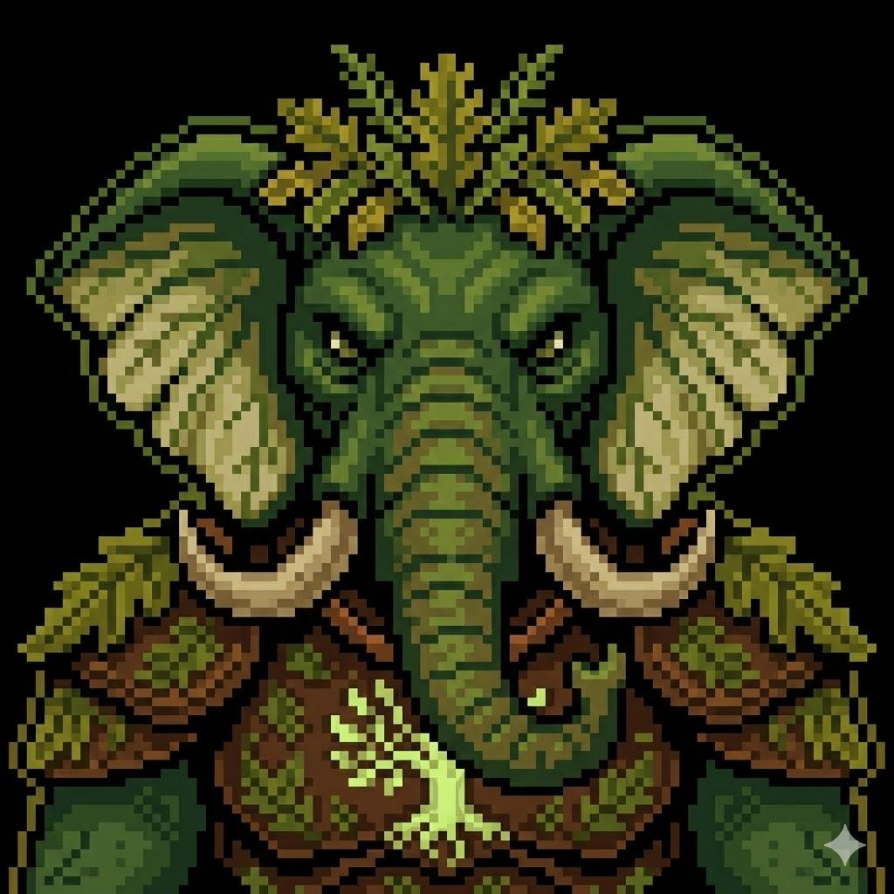
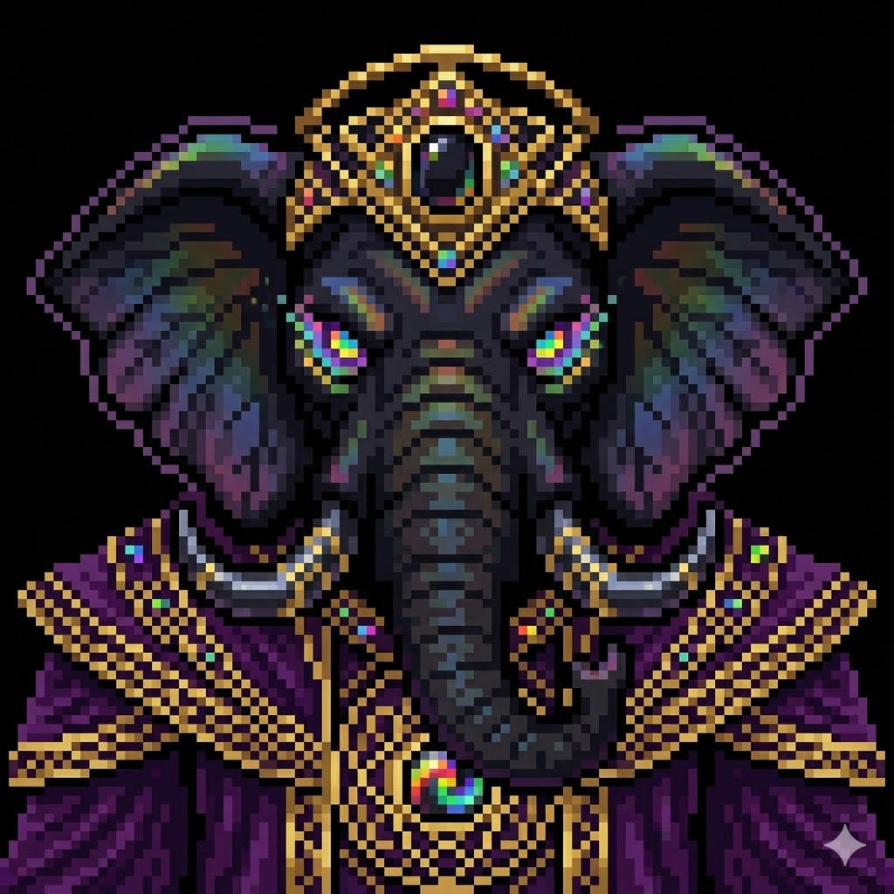

[ PROJECT: MINE WARS ]
DATA RECOVERY: 100% | CLASSIFICATION: TOP SECRET
Before it had a memory, it had a war."
Before the first word was ever spoken in Sector 4, before the first signal was ever transmitted across the vast dark interior of the digital realm, there was the crystal.
It had no origin that the oldest entities could verify. The Static Lions — who had existed longer than recorded memory — had no story of how it arrived. Their histories, encoded in the crackling white and gray fur that ran across their immense flanks, began with the crystal already present. Already pulsing.

The Obsidian Crystal sat at the precise center of Sector 4, and Sector 4 sat at the precise center of everything else. It was perfectly, absolutely black. Not the black of absence, but the black of everything compressed into a point so dense that light couldn't pass through it.
The Glitch Elephants did not announce themselves. They were not the kind of thing that announced itself. They were a force of nature in the way that earthquakes are forces of nature — massive and wrong and indifferent to what they happened to be moving through.

They were, each one, the size of a city block. Where the Static Lions were composed of coherent signal, the Glitch Elephants were composed of error. Their hide fractured in real time — neon green cracks running across magenta digital blocks. When they moved, they left behind them fragments of themselves: broken geometry and error messages made physical.

The tears multiplied. The Glitch Elephants were building doors. Within twelve cycles of the first tear, there were seven portals open across Sector 4. Each one showed a different elsewhere. A physical world. An analog world.

Through the portal, a figure appeared. Tall. Dark-armored. Orid. He was the reason. Not a casualty of the invasion. Not an accident of the portals. The crystal had called for him specifically.

The battle that followed shifted when the intervention came from below. From the mine. Orid stayed near the crystal, near the patient silence of Karra. He had become something the original architects had not designed for: the keeper of the mine.
He had broken the small oath to keep the large one.
Go deeper.